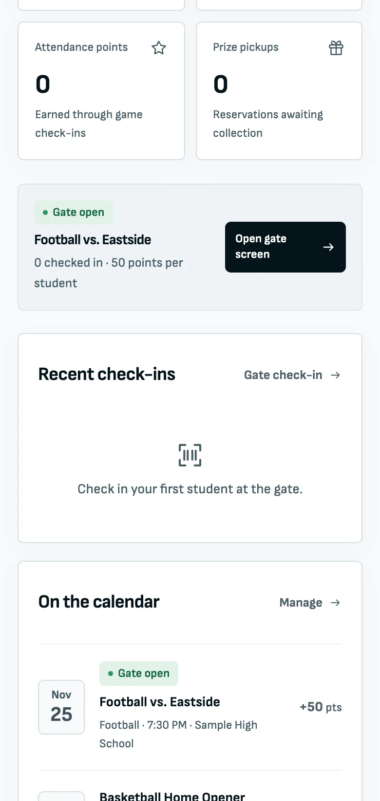
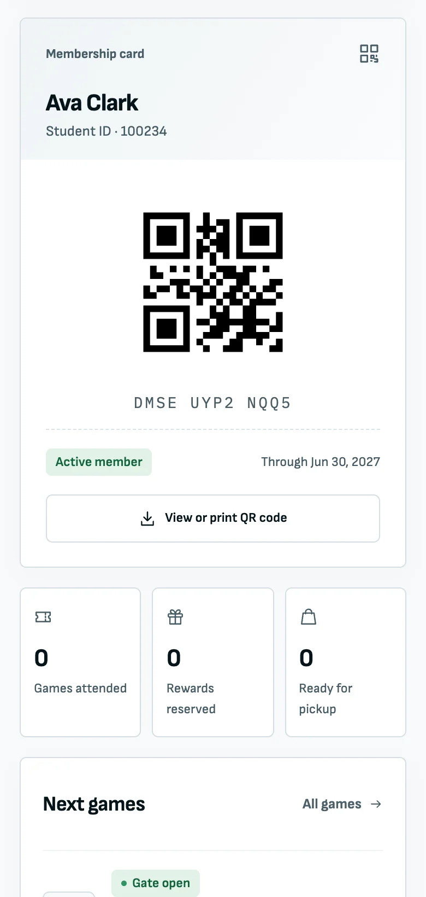
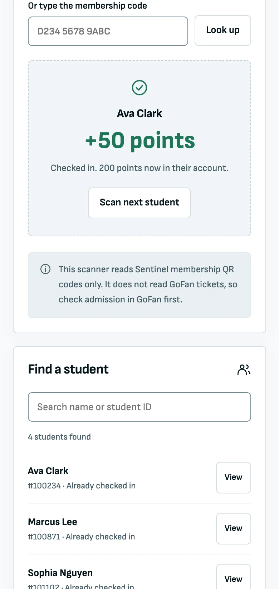
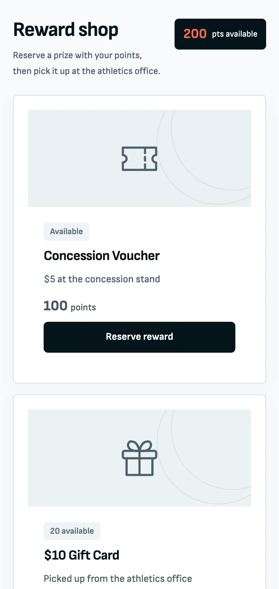
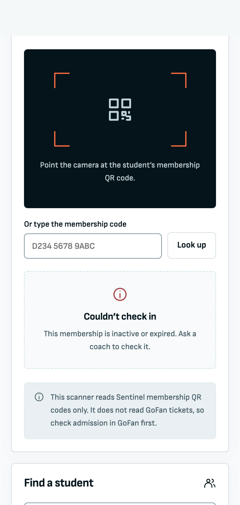

How Sentinel works





If a scan is refused
The phone says why. It only affects points: your ticket check still decides who gets in.
- Already checked in
- Let them in. They have their points.
- This membership is inactive or expired
- Send them to the athletics office.
- No gates are open
- Ask an admin to open the gate.
- This QR code was replaced
- Scan the new one, or find them by name.
- This QR code is not a Sentinel membership code
- Ask for the membership code.
- No member has this QR code
- Check the code, or find them by name.
- Camera won't read it
- Allow the camera, or find them by name.
- Phone is offline or dead
- Move to a signal, or sign in on another phone.

SentinelStudent member
Ava ClarkID 100234D7K2 M9QX 4T26
The QR code
- It holds a random code
- No name, ID number or points.
- Lost it? Replace it
- The points stay. The old code, and any screenshot of it, stops working.
- No phone? Print it
- Or the gate finds the student by name or ID.
Questions
- Does it replace GoFan?
- No. Check tickets the way you do now, then scan.
- Is there anything to install or buy?
- No. It runs in the browser on phones you have.
- What if students share a code?
- The worker sees the name, and each account earns once per game.
- Can staff change points?
- Yes, with a written reason. Every change is recorded.
- What if a pickup is canceled?
- The points go back to the student.
- Does it work at away games?
- Yes, if someone from your school is there to scan and an admin opens the gate in the app.